Pauli and Clifford Groups¶
qecc.Pauli - Class representing Pauli group elements¶
- class qecc.Pauli(operator, phase=0)¶
Class representing an element of the Pauli group on
 qubits.
qubits.Parameters: - as_bsv()¶
Converts the given Pauli to a binary symplectic vector, discarding phase information.
Returns: A binary symplectic vector representing this Pauli operator. Return type: BinarySymplecticVector
- as_gens()¶
Expresses an input Pauli in terms of the elementary generators 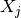 and 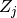, stripping off phases.
Return type: list of qecc.Pauli instances.
- ct()¶
The conjugate transpose of this Pauli operator.
Return type: an instance of the qecc.Pauli class.
- mul_phase(ph)¶
Increments the phase of this Pauli by 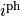.
Parameters: ph (int) – Amount the phase is to be incremented by. Returns: This instance.
- tens(other)¶
Concatenates the op strings of two Paulis, and multiplies their phases, to produce the Kronecker product of the two.
Parameters: other (qecc.Pauli) – Pauli operator  to be tensored with this instance.
to be tensored with this instance.Returns: An instance representing 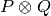, where  is the Pauli operator represented by this instance.
is the Pauli operator represented by this instance.
- wt()¶
Measures the weight of a given Pauli.
Return type: int (between 0 and the number of qubits on which the Pauli is defined) Returns: The number of qubits on which the represented Pauli operator is is supported.
 .
.The qecc.Pauli class supports multiplication, tensor products and negation by the *, & and - operators, respectively.
>>> P = qecc.Pauli('X')
>>> Q = qecc.Pauli('Y')
>>> P * Q
i^1 Z
>>> P & Q
i^0 XY
>>> -P * Q
i^3 Z
Additionally, instances of qecc.Pauli can be tested for equality.
>>> -P * Q == P * -Q
True
>>> P * Q != Q * P
True
The length of a qecc.Pauli is defined as the number of qubits it acts upon.
>>> len(qecc.Pauli('XYZI'))
4
Utility Functions¶
- qecc.com(P, Q)¶
Given two elements P and Q of a Pauli group, returns 0 if 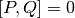 and returns 1 if 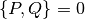.
Parameters: - P (qecc.Pauli) – Representation of .
- Q (qecc.Pauli) – Representation of .
Returns: 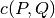.
Return type: int
- P (qecc.Pauli) – Representation of
- qecc.pauli_group(nq)¶
Generates an iterator onto the Pauli group of
qubits,
where is given as the argument nq.Parameters: nq (int) – The number of qubits acted upon by the returned Pauli group. Returns: An iterator such that list(pauli_group(nq)) produces a list of all possible Pauli operators on nq qubits.
- qecc.from_generators(gens)¶
Given a list of generators gens, yields an iterator onto the group generated by products of elements from gens.
- qecc.is_in_normalizer(pauli, stab)¶
Given an element pauli of a Pauli group and the generators stab of a stabilizer group
 , returns True if and only if
pauli is in the normalizer 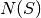.
, returns True if and only if
pauli is in the normalizer 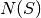.
qecc.Clifford - Class representing Clifford group elements¶
- class qecc.Clifford(xbars, zbars)¶
Class representing an element of the Cifford group on
qubits.Parameters: - xbars (list of qecc.Pauli instances) – A list of operators 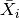 such that the
represented Clifford operation
 acts as 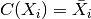.
acts as 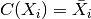. - zbars (list of qecc.Pauli instances) – See xbars.
- as_bsm()¶
Returns a representation of the Clifford operator as a binary symplectic matrix.
Return type: qecc.BinarySymplecticMatrix
- conjugate_pauli(pauli)¶
Given an instance of qecc.Pauli representing the operator
, calculates the mapping 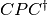.Parameters: pauli (qecc.Pauli) – Representation of the Pauli operator .Returns: Representation of the Pauli operator , where is the Clifford operator represented by this
instance.Return type: qecc.Pauli
- is_valid()¶
Checks that the output of the represented Clifford gate obeys the proper commutation relations.
- xbars (list of qecc.Pauli instances) – A list of operators 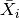 such that the
represented Clifford operation
Common Clifford Gates¶
The qecc package provides support for several common Clifford operators. These functions can be used to quickly analyze small circuits. For more extensive circuit support, please see Circuit Manipulation and Simulation.
- qecc.eye_c(nq)¶
Yields the identity Clifford, defined to map every generator of the Pauli group to itself.
Return type: Clifford
- qecc.cnot(nq, ctrl, targ)¶
Yields the nq-qubit CNOT Clifford controlled on ctrl, acting a Pauli
 on targ.
on targ.Return type: qecc.Clifford
- qecc.hadamard(nq, q)¶
Yields the nq-qubit Clifford, switching
and on qubit q, yielding a minus sign on  .
.Return type: qecc.Clifford
- qecc.phase(nq, q)¶
Yields the 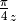-rotation Clifford, acting on qubit q.
Return type: qecc.Clifford
- qecc.swap(nq, q1, q2)¶
Yields the swap Clifford, on nq qubits, which swaps the Pauli generators on q1 and q2.
Return type: qecc.Clifford
- qecc.cz(nq, q1, q2)¶
Yields the nq-qubit C-Z Clifford, acting on qubits q1 and q2.
Return type: qecc.Clifford
- qecc.pauli_gate(pauli)¶
Imports an instance of the qecc.Pauli class into the qecc.Clifford class, representing a Pauli as a series of sign changes.
Return type: qecc.Clifford